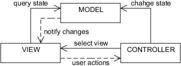
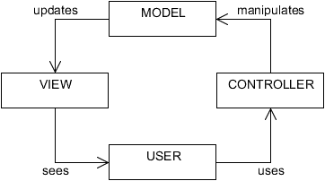

MVC 軟體架構
全名 Model-View-Controller，源自於 Xerox PARC 的 Smalltalk，將圖形化介面的軟體分成「模型」「檢視」「控制器」三大成分來應用，以利日後的擴充與修改。
MVC 結構相互間的關係

MVC 模式的軟體設計

什麼是 MVC 模式
事實上 Model-View-Controller 只是個概念，它表現在 Smalltalk 這套「圖形化應用軟體開發系統」裡面[1]，並不是一種可以明文規範下來的編碼風格讓我們遵循，於是 MVC 開發模式對很多人來說是件不容易理解的事。
但自 MS-DOS 6.22 進入 Windows 95 時代以後的今天，我們「已經在用的軟體操作模式」就是「MVC 模式」了！當你誤以為 MVC 從頭到尾都是侷限在「原始碼」的一種「程式設計手法」，就無法理解 MVC 開發模式是怎麼一回事～
例如使用 Web Browser[2] 存取 HTTP Server[3]，再為這樣的軟體開發程式系統，就是一種 MVC 模式的表現。
也就是說，MVC 模式並不是把「應用軟體」拆成三個部分來設計，應用軟體本身就是 MVC 的其中一部分！